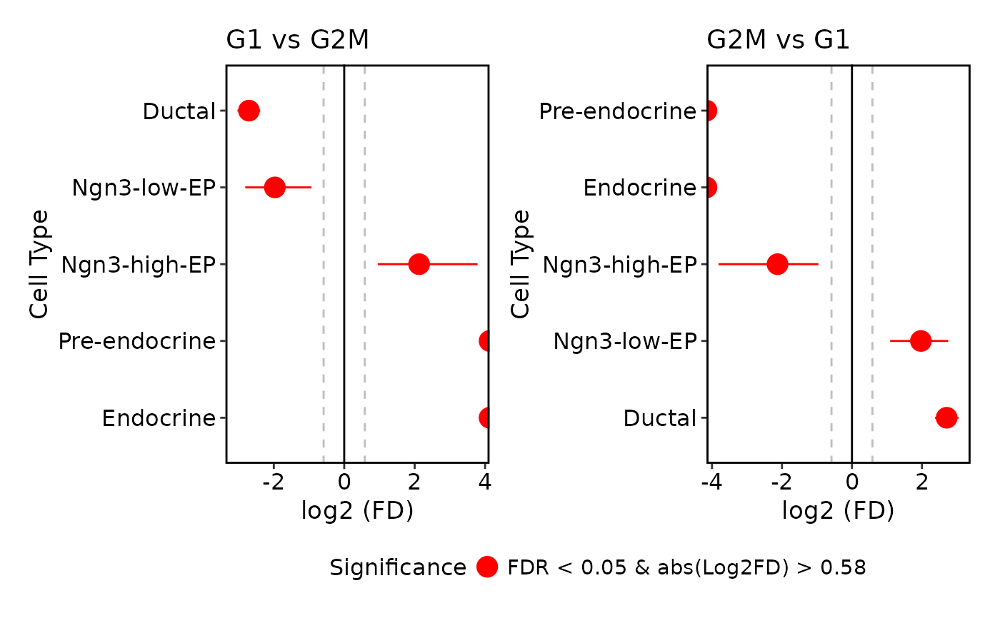

RunProportionTest performs a Monte-carlo permutation test to quantify the cell proportion differences between each condition.
Usage
RunProportionTest(
srt,
group.by,
split.by,
comparison = NULL,
n_permutations = 1000,
FDR_threshold = 0.05,
log2FD_threshold = log2(1.5),
include_all_cells = FALSE,
verbose = TRUE
)Arguments
- srt
A Seurat object.
- group.by
Name of one or more meta.data columns to group (color) cells by.
- split.by
Name of a column in meta.data column to split plot by. Default is
NULL.- comparison
Optional: specify comparisons to perform.
- n_permutations
Number of permutations for the test.
- FDR_threshold
FDR value cutoff for significance.
- log2FD_threshold
Absolute value of log2FD cutoff for significance.
- include_all_cells
Whether to include all cell types in the complete grid (default: FALSE).
- verbose
Whether to print the message. Default is
TRUE.
Examples
data(pancreas_sub)
# Default behavior: only include cell types present in comparison groups
pancreas_sub <- RunProportionTest(
pancreas_sub,
group.by = "CellType",
split.by = "Phase",
comparison = list(c("G2M", "G1"))
)
# Include all cell types from the dataset
pancreas_sub <- RunProportionTest(
pancreas_sub,
group.by = "CellType",
split.by = "Phase",
comparison = list(c("G2M", "G1")),
include_all_cells = TRUE
)
ProportionTestPlot(
pancreas_sub
)
